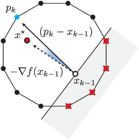
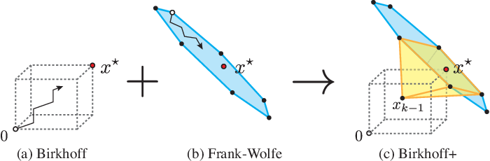

Birkhoff+¶
07-12-2021
This page contains my reading notes on
Problem definition:¶
For a given \(n \times n\) doubly stochastic matrix \(X^{\star}\) and an \(\epsilon \geq 0\), our goal is to find a small collection of permutation matrices \(P_{1}, P_{2}, \ldots, P_{k}\), and weights \(\theta_{1}, \theta_{2}, \ldots, \theta_{k}\) with \(\sum_{i=1}^{k}\theta_{i} \leq 1\) such that \(\lVert X^{\star} - \sum_{i=1}^{k}\theta_{i}P_{i} \rVert_{F} \leq \epsilon\).
Definitions¶
When applied to vectors or matrices, \(+, -, \cdot\) are all element-wise operations and we write \(x < (\leq, >, \geq ) y\) when all elements of \(x\) are \(< (\leq, >, \geq)\) of all elements of \(y\).
Doubly stochastic matrix: a doubly stochastic matrix is a square matrix of non-negative real numbers, each of whose rows and columns sums to 1.
Frobenius norm: \(\lVert X \rVert_{F} = \sqrt{\sum_{i, j}\vert X(i, j) \vert^2}\), which is the same as the l2 norm of a vector: \(\lVert x \rVert_{2} = \sqrt{\sum_{i}\vert x(i) \vert^2}\)
Convex hull \(\mathrm{conv}(A)\): The convex hull of set A (\(\mathrm{conv}(A)\)) is the smallest convex set that contains set \(A\).
Birkhoff polytope \(\mathcal{B}\): the convex set that contains all doubly stochastic matrices of size \(n \times n\).
Permutation matrices \(\mathcal{P}\): the extreme points of the Birkhoff polytope.
Linear program \(\mathrm{LP}(c, \mathcal{X})\): minimize \(c^{T}x\), subject to \(x \in \mathcal{X}\). We assume that the solution returned is always an extreme point (\(x \in \mathcal{P}\) if \(\mathcal{X} = \mathcal{B}\)).
Birkhoff step: \(\mathrm{STEP}(X^{\star}, X_{k-1}, P_{k}) = \min_{a,b}\{(X^{\star}(a, b) - X_{k-1}(a,b) - 1)P_{k}(a,b) + 1\}\). It computes the step size (weight) by taking the minimum non-zero element of the difference matrix (masked by the permutation matrix \(P_{k}\)) between \(X^{\star}\) and \(X\).
Algorithms (All matrices (\(X\)) are represented using vectors (\(x\)) by stacking the matrix columns)¶
General Birkhoff algorithm (Algorithm 1, 2 and 3)¶
\(x_{0} = 0, k = 0\)
while \(\lVert x^{\star} - x_{k-1} \rVert_{2} > \epsilon\) and \(k \leq k_{max}\) do
\(\alpha \gets (1 - \sum_{i=1}^{k-1}\theta_{i}) \mathbin{/} n^2\) // (Why this value)
\(p_{k} \gets p \in \mathcal{I}_{k}(\alpha)\) // Get next permutation matrix
\(\theta_{k} \gets\) \(\mathrm{STEP}(x^{\star}, x_{k-1}, p_k)\) // Get next weight based on the new permutation matrix
\(x_{k} \gets x_{k-1} + \theta_{k}p_{k}\)
\(k \gets k + 1\)
end while
return \((p_{1}, \ldots, p_{k-1})\), \((\theta_{1}, \ldots, \theta_{k-1})\)
\(n\) is the size of \(X^{\star}\) and \(d=n^2\) is the number of elements in \(X^{\star}\).
\(\mathcal{I}_{k}(\alpha) =\{P \in \mathcal{P} \mid X_{k-1}(a,b) + \alpha P(a,b) \leq X^{\star}(a,b) \}\).
If \(P_{k} \in \mathcal{I}_{k}(\alpha)\), then \((X^{\star} - X_{k-1}) \cdot P_{k} \geq \alpha\), (each element of the difference matrix between \(X^{\star}\) and \(X_{k-1}\) masked by \(P_{k}\) is \(\geq \alpha\)).
Since \(\mathrm{STEP}(X^{\star}, X_{k-1}, P_{k})\) is taking the minimum of non-zero element of \((X^{\star} - X_{k-1}) \cdot P_{k}\) (definition 7), \(\mathrm{STEP}(X^{\star}, X_{k-1}, P_{k}) \geq \alpha\)
Due to the definitions of \(\mathcal{I}_{k}(\alpha)\) and \(\mathrm{STEP}\), \(x_{k} \leq x^{\star}\) all the time.
Birkhoff algorithm can be seen as constructing a path from the origin (\(x_{0} = 0\)) to \(x^{\star}\) while always remaining in a dotted box, where \(x_{0}\) and \(x^{\star}\) are two diagonal vertices of the box (\(x_{k} \leq x^{\star}\)).
General Birkhoff algorithm doesn’t specify which specific permutation to select from \(\mathcal{I}_{k}(\alpha)\).
Classic Birkhoff algorithm (Algorithm 4)¶
\(x_{0} = 0, k = 0\)
while \(\lVert x^{\star} - x_{k-1} \rVert_{2} > \epsilon\) and \(k \leq k_{max}\) do
\(p_k \gets \mathrm{LP}(-\lceil x^{\star} - x_{k-1} \rceil, \mathcal{B})\).
\(\theta_{k} \gets\) \(\mathrm{STEP}(x^{\star}, x_{k-1}, p_k)\)
\(x_{k} \gets x_{k-1} + \theta_{k}p_{k}\)
\(k \gets k + 1\)
end while
return \((p_{1}, \ldots, p_{k-1})\), \((\theta_{1}, \ldots, \theta_{k-1})\)
The only slight difference is line 3, which is essentially doing the same thing with general Birkhoff algorithm.
Since \(x^{\star} - x_{k-1} \in [0, 1]\), its ceiling (\(\lceil x^{\star} - x_{k-1} \rceil\)) makes all nonzero elements to be 1, which makes \(\mathrm{LP}\) treat all nonzero elements equally.
Frank-Wolfe (FW) algorithm (Algorithm 5)¶
\(x_{0} \in \mathcal{P}, k = 0\)
while \(\lVert x^{\star} - x_{k-1} \rVert_{2} > \epsilon\) and \(k \leq k_{max}\) do
\(p_k \gets \mathrm{LP}(-(x^{\star} - x_{k-1}), \mathcal{B})\) // Get the next extreme point
\(\theta_{k} \gets (x^{\star} - x_{k-1})^{T}(p_{k} - x_{k-1}) \mathbin{/} \lVert p_{k} - x_{k-1} \rVert_{2}^{2}\) // Calculate the step size
\(x_{k} \gets x_{k-1} + \theta_{k}(p_{k} - x_{k-1})\) // Update x
\(k \gets k + 1\)
end while
return \((p_{1}, \ldots, p_{k-1})\), \((\theta_{1}, \ldots, \theta_{k-1})\)
The assumption of the FW algorithm is that there always exists an extreme point in the Birkhoff polytope (permutation matrix \(p_{k}\)) that is a direction (\(p_{k} - x_{k-1}\)) in which it is possible to improve the objective function.
Since each extreme point of the Birkhoff polytope is an permutation matrix and thus the each step size can be considered as the weight of the permutation matrix, FW algorithm can be used to solve Birkhoff problem.
The paper selects the objective function to be \(f(x) = \frac{1}{2} \lVert x - x^{\star} \rVert_{2}^{2}\), which measures the square of the \(l_{2}\) norm of the difference between the current matrix \(x_{k}\) and the objective matrix \(x^{\star}\).
The solving of \(\mathrm{LP}\) at line 3 is essentially trying to find an extreme point \(p_{k}\) in the Birkhoff polytope by solving \({\mathrm{argmin}_{u \in \mathcal{P}}}\nabla f(x_{k-1})^{T}u\), in which \(\nabla f(x_{k-1}) = -(x^{\star} - x_{k-1})\).
The way to calculate \(\theta_{k}\) at line 4 is derived by solving \(f(x_{k}) - f(x_{k-1})\).
Note at line 5 \(x_{k} = x_{k-1} + \theta_{k}(p_{k} - x_{k-1}) = (1 - \theta)x_{k-1} + \theta_{k}p_{k}\), so \(x_{k}\) is still a linear combination of permutation matrices.
Difference with the Birkhoff algorithm:
FW uses a random extreme point instead of 0 as the starting point, since it requires \(x_{k} \in \mathcal{B}\) at all time.
FW does not require that \(x_{k} \leq x^{\star}\) and thus \(x^{\star}\) can be approximated from any direction.
Fully Corrective Frank-Wolfe (Algorithm 6)¶
FCFW provides the best approximation with the number of extreme points selected up to iteration k

Birkhoff+ algorithm (Algorithm 7)¶
\(x_{0} = 0, k = 0\)
while \(\lVert x^{\star} - x_{k-1} \rVert_{2} > \epsilon\) and \(k \leq k_{max}\) do
\(\alpha \gets (1 - \sum_{i=1}^{k-1} \theta_i) \mathbin{/} n^2\)
\(p_{k} \gets \mathrm{LP}(\nabla f_{\beta}(x_{k-1}), \mathrm{conv}(\mathcal{I}_{k}(\alpha)))\)
\(\theta_{k} \gets\) \(\mathrm{STEP}(x^{\star}, x_{k-1}, p_k)\)
\(x_{k} \gets x_{k-1} + \theta_{k}p_{k}\)
\(k \gets k + 1\)
end while
return \((p_{1}, \ldots, p_{k-1})\), \((\theta_{1}, \ldots, \theta_{k-1})\)
Birkhoff+ combines Birkhoff algorithm and FW algorithm. This approach wants to use the path or permutations that FW would select while remaining in the box that characterizes the Birkhoff’s approach.
The only real difference between Birkhoff+ and Birkhoff is the way to compute \(p_{k}\) (line 4).
\(f_{\beta}(x) = f(x) - \beta \sum_{j=1}^{d} \log(x^{\star}(j) - x(j) + \frac{\epsilon}{d})\), which consists \(f(x)\) (same as what is used in FW) and \(- \beta \sum_{j=1}^{d} \log(x^{\star}(j) - x(j) + \frac{\epsilon}{d})\) (the barrier).
The barrier is a penalty term that restricts the \(x_{k}\) to always remain in the Birkhoff box.
If we ignore \(\frac{\epsilon}{d}\) and \(\beta\), \(-\sum_{j=1}^{d} \log(x^{\star}(j) - x(j)) \to \infty\) if any \(x^{\star}(j) \approx x(j)\). That is, the penalty will be very high if any of the element of \(x\) is closed to \(x^{\star}\).
Since \(x_{0} = 0 < x^{\star}\) at the starting point and the barrier will prevent all elements of \(x\) getting closed to \(x^{\star}\), the barrier can prevent \(x > x^{\star}\).
\(\beta\) is a hyper-parameter that balances the objective function and the barrier. In the code, it is tuned smaller and smaller as the \(x_{k}\) is getting closed to \(x^{\star}\).
\(\frac{\epsilon}{d}\) is used to avoid \(\log \to \infty\).
\(\mathrm{LP}(\nabla f_{\beta}(x_{k-1}), \mathrm{conv}(\mathcal{I}_{k}(\alpha))) = \mathrm{LP}(\nabla f_{\beta}(x_{k-1}) + b_{k}, \mathcal{B})\), where \(b_{k} = \frac{\epsilon}{d} \cdot \mathbb{1}(x^{\star} - x_{k-1} \leq \alpha)\) is a penalty vector to force the solver to do not select the elements of vector \((x^{\star} - x_{k})\) smaller than \(\alpha\).
For all elements of vector \((x^{\star} - x_{k})\) smaller than \(\alpha\), \(b_{k} = \frac{\epsilon}{d}\). Otherwise, \(b_{k} = 0\).
Birkhoff+ (max_rep) algorithm (Algorithm 8)¶
\(x_{0} = 0, k = 0\)
while \(\lVert x^{\star} - x_{k-1} \rVert_{2} > \epsilon\) and \(k \leq k_{max}\) do
\(\alpha \gets (1 - \sum_{i=1}^{k-1} \theta_i) \mathbin{/} n^2\)
for \(i = 1,\ldots, \mathrm{max\_rep}\) do
\(p_{i} \gets \mathrm{LP}(\nabla f_{\beta}(x_{k-1}), \mathrm{conv}(\mathcal{I}_{k}(\alpha)))\)
\(\theta_{i} \gets \mathrm{STEP}(x^{\star}, x_{k-1}, p_{k})\)
if \((\theta_{i} > \alpha)\) \(\alpha \gets \mathrm{STEP}(x^{\star}, x_{k-1}, p_{k})\)
else exit while loop
\(p_{k} \gets p_{i}\)
end for
\(\theta_{k} \gets\) \(\mathrm{STEP}(x^{\star}, x_{k-1}, p_k)\)
\(x_{k} \gets x_{k-1} + \theta_{k}p_{k}\)
\(k \gets k + 1\)
end while
return \((p_{1}, \ldots, p_{k-1})\), \((\theta_{1}, \ldots, \theta_{k-1})\)
Instead of using a constant \(\alpha\), Birkhoff+ (max_rep) searches the largest \(\alpha\) in each iteration by alternatively updating \(\alpha\) and \(p_{k}\) until \(\alpha\) cannot be updated larger or \(\mathrm{max\_rep}\) iterations is reached.
Larger \(\alpha\) \(\to\) larger \(\theta\) \(\to\) less number of permutation matrices.
\(\alpha\) is set to be the largest step size (weight from \(\mathrm{STEP}\) function) found so far.

Source code with comment¶
https://github.com/vvalls/BirkhoffDecomposition.jl
using JuMP
using Clp
using Random
using SparseArrays
# functionsBD.jl
struct polytope
A;
b;
l;
u;
model;
x;
end
@doc raw"""
Solve a linear programing problem
"""
function LP(c, P)
@objective(P.model, Min, c'* P.x)
optimize!(P.model)
return value.(P.x)
end
@doc raw"""
Get a random stochastic matrix
"""
function randomDoublyStochasticMatrix(n; num_perm=n^2)
M = zeros(n, n);
α = rand(num_perm)
α = α / sum(α);
for i = 1:num_perm
perm = randperm(n);
for j = 1:n
M[perm[j], j] += α[i];
end
end
return M;
end
@doc raw"""
Create Birkhoff polytope ``\mathcal{B}`` (Section V-A), which contains all possible doublely stochastic matrices.
Since the paper assumes that the solutions by solving linear programs over are Birkhoff polytope extreme points,
the solutions are permutation matrices (which are also doublely stochastic).
"""
function birkhoffPolytope(n)
# x is a doublely stochastic matrix that is represented by a vector (flattened).
# Use a constant matrix A(M') and a constant vector b to specify that x is doublely stochastic.
M = zeros(n*n, 2*n);
# Specify the sum of each row of x equals to 1
for i = 1:n
M[(i-1)*n*n + (i-1)*n + 1 : (i-1)*n*n + (i-1)*n + n] = ones(n,1);
end
# Specify the sum of each col of x equals to 1
for i = 1:n
for j=1:n
M[n*n*n + (i-1)*n*n + (j-1)*n + i] = 1;
end
end
A = sparse(M');
b = ones(2*n);
model = Model(Clp.Optimizer)
set_silent(model)
@variable(model, 0 <= x[1:n*n] <= 1)
@constraint(model, A * x .== b)
return polytope(A, b, 0, 1, model, x)
end
birkhoffPolytope
# stepsizes.jl
@doc raw"""
Get the step size (weight) by taking the minimum non-zero entry of the difference matrix
(masked by the permutation matrix y) between x_star and x.
"""
function getBirkhoffStepSize(x_star, x, y)
return minimum((x_star - x).*y - (y.-1));
end
getBirkhoffStepSize
# extremepoints.jl
@doc raw"""
Birkhoff+ (max_rep) Psudocode line 4-10
"""
function getEPBplus(x_star, x, B, max_rep, ε)
n = sqrt(size(x_star, 1))
d = size(x_star, 1);
i = 1;
y = 0;
α = 0;
while(i <= max_rep)
# Calculate \beta for this iteration.
# \beta should become smaller and smaller.
z = Int16.(x_star - x .> ε)
s = getBirkhoffStepSize(x_star, x, z)
beta = (s + ε/d)*0.5
# c is the gradient of the objective function with barrier.
# b is an iterm added to make I_k(\alpha) to be B (Birkhoff polytope).
# See the paragraph in section VI.B after Corollary 2 for b.
c = -ones(d) + beta ./ (x_star - x .+ ε/d)
b = (n/ε).*Int16.(x_star - x .<= α)
y_iter = LP(c + b, B);
# If new solution (y_iter) makes objective function larger/worse (c'*y_iter > c'*y_z),
# fall back to the solution from the last iteration (y_z/x).
y_z = x;
if(c'*y_iter > c'*y_z)
y_iter = y_z
end
# \alpha should be the largest step size found.
# Algorithm terminates when \alpha doesn't increase
α_iter = getBirkhoffStepSize(x_star, x, y_iter);
if(α < α_iter)
α = α_iter;
y = y_iter;
else
return y;
end
i = i + 1;
end
return y
end
getEPBplus (generic function with 1 method)
# birkdecomp.jl
@doc raw"""
Birkhoff+ (max_rep)
"""
function birkdecomp(X, ε=1e-12; max_rep=1)
n = size(X, 1); # get size of Birkhoff polytope
x_star = reshape(X, n*n); # reshape doubly stochastic to vector
B = birkhoffPolytope(n); # Birkhoff polytope
ε = max(ε, 1e-15); # fix the maximum minimum precision
max_iter = (n-1)^2 + 1;
x = zeros(n*n); # initial point
extreme_points = zeros(n*n, max_iter); # extreme points (permutation) matrix
θ = zeros(max_iter); # weights vector
approx = Inf; # approximation error
i = 1; # iteration index
while(approx > ε)
# Get next extreme point
y = getEPBplus(x_star, x, B, max_rep, ε)
# Get next weight (step size)
θi = getBirkhoffStepSize(x_star, x, y)
# Update x_k
x = x + θi*y;
# Store the new weight
θ[i] = θi;
# Update the Frobenius norm
approx = sqrt(sum((abs.(x_star-x)).^2));
# Store the new extreme point matrix
extreme_points[:,i] = y;
i = i + 1;
end
return extreme_points[:, 1:i-1], θ[1:i-1]
end
birkdecomp (generic function with 2 methods)
# Generate a random doubly stochastic matrix (n is the dimension)
n = 3;
x = randomDoublyStochasticMatrix(n);
P, w = birkdecomp(x);
display(x)
display(P);
display(w);
3×3 Array{Float64,2}:
0.0607488 0.590595 0.348656
0.70177 0.0291194 0.269111
0.237482 0.380286 0.382233
9×5 Array{Float64,2}:
0.0 0.0 0.0 1.0 0.0
1.0 1.0 0.0 0.0 0.0
0.0 0.0 1.0 0.0 1.0
1.0 0.0 1.0 0.0 0.0
0.0 0.0 0.0 0.0 1.0
0.0 1.0 0.0 1.0 0.0
0.0 1.0 0.0 0.0 1.0
0.0 0.0 1.0 1.0 0.0
1.0 0.0 0.0 0.0 0.0
5-element Array{Float64,1}:
0.38223288955133716
0.31953666864401353
0.20836217653438616
0.06074883235172196
0.029119432918541188
x_new = zeros(n, n)
for i=1:length(w)
x_new = x_new + w[i] * reshape(P[:, i], n, n)
end
display(x_new)
3×3 Array{Float64,2}:
0.0607488 0.590595 0.348656
0.70177 0.0291194 0.269111
0.237482 0.380286 0.382233